Arquitetura¶
A arquitetura é descrita no modelo C4: contexto → contêineres → componentes, complementado por visões de camadas e de implantação. O C4 é hoje a notação mais usada no mercado para comunicar arquitetura a públicos mistos (técnicos e não técnicos) e não exige conhecimento prévio de UML.
Contexto (C4 nível 1)¶
Ver Figura 1. O Studio fica entre o pesquisador e o DrugHunter; ele próprio acessa RCSB (busca e download) e SMTP, enquanto o DrugHunter acessa o ChEMBL e as ferramentas de docking e simulação.
Contêineres (C4 nível 2)¶


| Contêiner | Responsabilidade | Observações |
|---|---|---|
| Frontend SPA | Interface, estado de tela, polling de jobs, gráficos | Servido estático pelo backend em produção; em dev, Vite :5173 com proxy /api → :8000 |
| Backend API | Autenticação, regras de aplicação, persistência, orquestração de jobs | FastAPI; uma thread daemon por job (ver padrão de job) |
| SQLite | 17 tabelas (usuários, cache de proteínas, jobs, resultados) | Criado por create_all; sem Alembic (migração manual idempotente em _migrate_schema) |
| Workers | Um script _dh_*_worker.py por módulo; importa o DrugHunter e reporta eventos JSON |
Executados com o Python do ambiente conda do DrugHunter (python_bin) |
| DrugHunter | Motor científico | Diretório externo (drug_hunter_path); não é empacotado nem modificado |
| Artefatos do pipeline | CSV, PNG, modelos, trajetórias | Ficam dentro do diretório do DrugHunter, não na pasta de dados do Studio |
Backend: arquitetura hexagonal¶


A organização segue Ports & Adapters: routes/ adapta HTTP para o domínio; usecases/
orquestra; services/ são repositórios; infra/ implementa adaptadores de saída (banco, runners externos, storage).
| Pasta | Papel | Regra |
|---|---|---|
routes/ |
Handlers HTTP (12 routers) | Sem lógica de negócio |
core/ |
deps.py (autenticação por dependência), security.py (JWT) |
— |
usecases/ |
Casos de uso; valida pré-requisitos e dispara jobs | Não conhece HTTP |
services/ |
Consultas SQLAlchemy | Só conhecem Session e modelos |
domain/ |
models (ORM), schemas (DTOs Pydantic), utils |
Sem dependência de HTTP |
infra/ |
db, external (runners e workers), storage, scheduler, email_sender, crypto, pdb_preparador |
Implementações concretas |
Desvios da arquitetura declarada (observados no código)
routes/download.py,routes/home.pye partes deroutes/clustering.py/neurodock.pycontêm lógica na própria rota (sem usecase), contrariando a regra "routes sem lógica".
Frontend: camadas com injeção de dependência manual¶


Fluxo real: Page → hook useXPage → Template → componentes → UseCase → IHTTPClient → fetch /api.
O container.ts instancia um HTTPClient e 16 usecases como singletons; App.tsx os repassa por props até as
páginas. Detalhes em Frontend.
Implantação¶


Detalhes de empacotamento, localização dos dados e variáveis de ambiente em Implantação e segurança.
Decisões arquiteturais relevantes¶
| Decisão | Justificativa | Consequência |
|---|---|---|
| Chamar o DrugHunter por subprocesso com o Python do ambiente conda dele | O DrugHunter exige um ambiente científico pesado (RDKit, OpenMM, TensorFlow…) incompatível com o ambiente do backend | Isolamento de dependências; comunicação por JSON em argv e JSON-lines no stdout |
| Polling em vez de WebSocket/SSE para jobs | Simplicidade; jobs duram minutos a horas | Latência de 2,5–10 s na atualização; falhas de rede podem passar despercebidas |
| SSE apenas na busca RCSB | Progresso fino por proteína; EventSource não envia cabeçalhos → token vai na query string |
Ver segurança |
| Artefatos dentro da árvore do DrugHunter | O DrugHunter só aceita caminhos relativos ao seu cwd |
Acoplamento por convenção de pastas; apagar o diretório do DrugHunter apaga os resultados |
| Cache de proteínas compartilhado entre usuários | Reduz chamadas ao RCSB | proteins não tem user_id; TTL configurável limpa o cache |
Estados de job como String livre |
Simplicidade | Sem Enum/CHECK; valores só por convenção (pending, running, done, error, cancelled) |